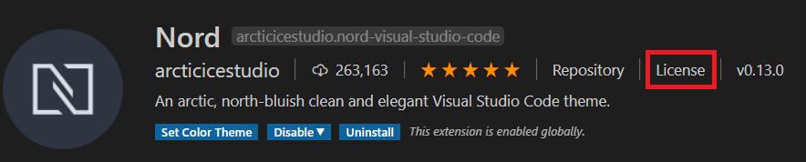
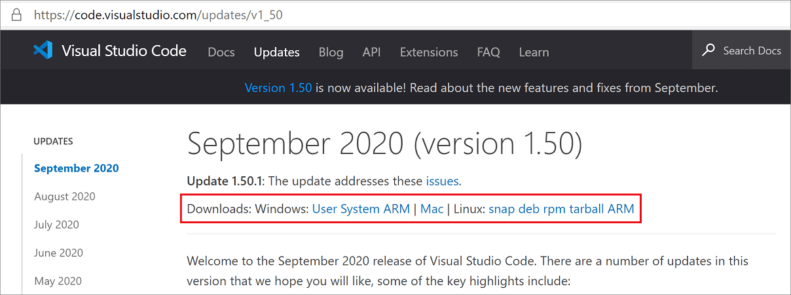
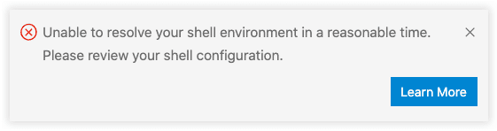

Visual Studio Code FAQ
Our docs contain a Common questions section as needed for specific topics. We've captured items here that don't fit in the other topics.
If you don't see an answer to your question here, check our previously reported issues on GitHub and our release notes.
What is the difference between Visual Studio Code and Visual Studio IDE?
Visual Studio Code is a streamlined code editor with support for development operations like debugging, task running, and version control. It aims to provide just the tools a developer needs for a quick code-build-debug cycle and leaves more complex workflows to fuller featured IDEs, such as Visual Studio IDE.
Which OSs are supported?
VS Code runs on macOS, Linux, and Windows. See the Requirements documentation for the supported versions. You can find more platform specific details in the Setup overview.
Is VS Code free?
Yes, VS Code is free for private or commercial use. See the product license for details.
How to disable telemetry reporting
VS Code collects usage data and sends it to Microsoft to help improve our products and services. Read our privacy statement and telemetry documentation to learn more.
If you don't want to send usage data to Microsoft, you can set the telemetry.telemetryLevel user setting to off.
From File > Preferences > Settings (macOS: Code > Preferences > Settings), search for telemetry, and set the Telemetry: Telemetry Level setting to off. This will silence all telemetry events from VS Code going forward.
Important Notice: VS Code gives you the option to install Microsoft and third party extensions. These extensions may be collecting their own usage data and are not controlled by the
telemetry.telemetryLevelsetting. Consult the specific extension's documentation to learn about its telemetry reporting.
How to disable experiments
VS Code uses experiments to try out new features or progressively roll them out. Our experimentation framework calls out to a Microsoft-owned service and is therefore disabled when telemetry is disabled. However, if you want to disable experiments regardless of your telemetry preferences, you may set the workbench.enableExperiments user setting to false.
From File > Preferences > Settings (macOS: Code > Preferences > Settings), search for experiments, and uncheck the Workbench: Enable Experiments setting. This will prevent VS Code from calling out to the service and opt out of any ongoing experiments.
How to disable crash reporting
VS Code collects data about any crashes that occur and sends it to Microsoft to help improve our products and services. Read our privacy statement and telemetry documentation to learn more.
If you don't want to send crash data to Microsoft, you can change the enable-crash-reporter runtime argument to false
- Open the Command Palette (⇧⌘P (Windows, Linux Ctrl+Shift+P)).
- Run the Preferences: Configure Runtime Arguments command.
- This command will open a
argv.jsonfile to configure runtime arguments. - Edit
"enable-crash-reporter": false. - Restart VS Code.
GDPR and VS Code
Now that the General Data Protection Regulation (GDPR) is in effect, we want to take this opportunity to reiterate that we take privacy very seriously. That's both for Microsoft as a company and specifically within the VS Code team.
To support GDPR:
- The VS Code product notifies all users that they can opt out of telemetry collection.
- The team actively reviews and classifies all telemetry sent (documented in our OSS codebase).
- There are valid data retention policies in place for any data collected, for example crash dumps.
You can learn more about VS Code's GDPR compliance in the telemetry documentation.
What online services does VS Code use?
Beyond crash reporting and telemetry, VS Code uses online services for various other purposes such as downloading product updates, finding, installing, and updating extensions, or providing Natural Language Search within the Settings editor. You can learn more in Managing online services.
You can choose to turn on/off features that use these services. From File > Preferences > Settings (macOS: Code > Preferences > Settings), and type the tag @tag:usesOnlineServices. This will display all settings that control the usage of online services and you can individually switch them on or off.
How do I opt out of VS Code auto-updates?
By default, VS Code is set up to auto-update for macOS and Windows users when we release new updates. If you do not want to get automatic updates, you can set the Update: Mode setting from default to none.
To modify the update mode, go to File > Preferences > Settings (macOS: Code > Preferences > Settings), search for update mode and change the setting to none.
If you use the JSON editor for your settings, add the following line:
"update.mode": "none"
You can install a previous release of VS Code by uninstalling your current version and then installing the download provided at the top of a specific release notes page.
Note: On Linux: If the VS Code repository was installed correctly then your system package manager should handle auto-updating in the same way as other packages on the system. See Installing VS Code on Linux.
Opt out of extension updates
By default, VS Code will also auto-update extensions as new versions become available. If you do not want extensions to automatically update, you can clear the Extensions: Auto Update check box in the Settings editor (⌘, (Windows, Linux Ctrl+,)).
If you use the JSON editor to modify your settings, add the following line:
"extensions.autoUpdate": false
Licensing
Location
You can find the VS Code licenses, third party notices and Chromium Open Source credit list under your VS Code installation location resources\app folder. VS Code's ThirdPartyNotices.txt, Chromium's Credits_*.html, and VS Code's English language LICENSE.txt are available under resources\app. Localized versions of LICENSE.txt by language ID are under resources\app\licenses.
Why does Visual Studio Code have a different license than the vscode GitHub repository?
To learn why Visual Studio Code, the product, has a different license than the open-source vscode GitHub repository, see issue #60 for a detailed explanation.
What is the difference between the vscode repository and the Microsoft Visual Studio Code distribution?
The github.com/microsoft/vscode repository (Code - OSS) is where we develop the Visual Studio Code product. Not only do we write code and work on issues there, we also publish our roadmap and monthly iteration and endgame plans. The source code is available to everyone under a standard MIT license.
Visual Studio Code is a distribution of the Code - OSS repository with Microsoft specific customizations (including source code), released under a traditional Microsoft product license.
See the Visual Studio Code and 'Code - OSS' Differences article for more details.
What does "Built on Open Source" mean?
Microsoft Visual Studio Code is a Microsoft licensed distribution of 'Code - OSS' that includes Microsoft proprietary assets (such as icons) and features (Visual Studio Marketplace integration, small aspects of enabling Remote Development). While these additions make up a very small percentage of the overall distribution code base, it is more accurate to say that Visual Studio Code is "built" on open source, rather than "is" open source, because of these differences. More information on what each distribution includes can be found in the Visual Studio Code and 'Code - OSS' Differences article.
How do I find the license for an extension?
Most extensions link to their license on their Marketplace page or in the overview section, when you select an extension in the Extensions view.
For example:

If you don't find a link to the license, you may find a license in the extension's repository if it is public, or you can contact the extension author through the Q & A section of the Marketplace.
Are all VS Code extensions open source?
Extension authors are free to choose a license that fits their business needs. While many extension authors have opted to release their source code under an open-source license, some extensions like Wallaby.js, Google Cloud Code, and the VS Code Remote Development extensions use proprietary licenses.
At Microsoft, we open source our extensions whenever possible. However, reliance on existing proprietary source code or libraries, source code that crosses into Microsoft licensed tools or services (for example Visual Studio), and business model differences across the entirety of Microsoft will result in some extensions using a proprietary license. You can find a list of Microsoft contributed Visual Studio Code extensions and their licenses in the Microsoft Extension Licenses article.
How do I find the version?
You can find the VS Code version information in the About dialog box.
On macOS, go to Code > About Visual Studio Code.
On Windows and Linux, go to Help > About.
The VS Code version is the first Version number listed and has the version format 'major.minor.release', for example '1.27.0'.
Previous release versions
You can find links to some release downloads at the top of a version's release notes:

If you need a type of installation not listed there, you can manually download via the following URLs:
| Download type | URL |
|---|---|
| Windows x64 System installer | https://update.code.visualstudio.com/{version}/win32-x64/stable |
| Windows x64 User installer | https://update.code.visualstudio.com/{version}/win32-x64-user/stable |
| Windows x64 zip | https://update.code.visualstudio.com/{version}/win32-x64-archive/stable |
| Windows Arm64 System installer | https://update.code.visualstudio.com/{version}/win32-arm64/stable |
| Windows Arm64 User installer | https://update.code.visualstudio.com/{version}/win32-arm64-user/stable |
| Windows Arm64 zip | https://update.code.visualstudio.com/{version}/win32-arm64-archive/stable |
| Windows x86 System installer | https://update.code.visualstudio.com/{version}/win32/stable |
| Windows x86 User installer | https://update.code.visualstudio.com/{version}/win32-user/stable |
| Windows x86 zip | https://update.code.visualstudio.com/{version}/win32-archive/stable |
| macOS Universal | https://update.code.visualstudio.com/{version}/darwin-universal/stable |
| macOS Intel chip | https://update.code.visualstudio.com/{version}/darwin/stable |
| macOS Apple silicon | https://update.code.visualstudio.com/{version}/darwin-arm64/stable |
| Linux x64 | https://update.code.visualstudio.com/{version}/linux-x64/stable |
| Linux x64 debian | https://update.code.visualstudio.com/{version}/linux-deb-x64/stable |
| Linux x64 rpm | https://update.code.visualstudio.com/{version}/linux-rpm-x64/stable |
| Linux x64 snap | https://update.code.visualstudio.com/{version}/linux-snap-x64/stable |
| Linux Arm32 | https://update.code.visualstudio.com/{version}/linux-armhf/stable |
| Linux Arm32 debian | https://update.code.visualstudio.com/{version}/linux-deb-armhf/stable |
| Linux Arm32 rpm | https://update.code.visualstudio.com/{version}/linux-rpm-armhf/stable |
| Linux Arm64 | https://update.code.visualstudio.com/{version}/linux-arm64/stable |
| Linux Arm64 debian | https://update.code.visualstudio.com/{version}/linux-deb-arm64/stable |
| Linux Arm64 rpm | https://update.code.visualstudio.com/{version}/linux-rpm-arm64/stable |
Substitute the specific release you want in the {version} placeholder. For example, to download the Linux Arm32 debian version for 1.50.1, you would use
https://update.code.visualstudio.com/1.50.1/linux-deb-armhf/stable
You can use the version string latest, if you'd like to always download the latest VS Code stable version.
Prerelease versions
Want an early peek at new VS Code features? You can try prerelease versions of VS Code by installing the "Insiders" build. The Insiders build installs side by side to your stable VS Code install and has isolated settings, configurations, and extensions. The Insiders build is updated nightly so you'll get the latest bug fixes and feature updates from the day before.
To install the Insiders build, go to the Insiders download page.
Where can I find the Visual Studio Code icons?
Are there guidelines for using the icons and names?
You can download the official Visual Studio Code icons and read the usage guidelines at Icons and names usage guidelines.
What is a VS Code "workspace"?
A VS Code "workspace" is usually just your project root folder. VS Code uses the "workspace" concept in order to scope project configurations such as project-specific settings as well as config files for debugging and tasks. Workspace files are stored at the project root in a .vscode folder. You can also have more than one root folder in a VS Code workspace through a feature called Multi-root workspaces.
You can learn more in the What is a VS Code "workspace"? article.
Can I run a portable version of VS Code?
Yes, VS Code has a Portable Mode that lets you keep settings and data in the same location as your installation, for example, on a USB drive.
Report an issue with a VS Code extension
For bugs, feature requests or to contact an extension author, you should use the links available in the Visual Studio Code Marketplace or use Help: Report Issue from the Command Palette. However, if there is an issue where an extension does not follow our code of conduct, for example it includes profanity, pornography or presents a risk to the user, then we have an email alias to report the issue. Once the mail is received, our Marketplace team will look into an appropriate course of action, up to and including unpublishing the extension.
Installation appears to be corrupt [Unsupported]
VS Code does a background check to detect if the installation has been changed on disk and if so, you will see the text [Unsupported] in the title bar. This is done since some extensions directly modify (patch) the VS Code product in such a way that is semi-permanent (until the next update) and this can cause hard to reproduce issues. We are not trying to block VS Code patching, but we want to raise awareness that patching VS Code means you are running an unsupported version. Reinstalling VS Code will replace the modified files and silence the warning.
You may also see the [Unsupported] message if VS Code files have been mistakenly quarantined or removed by anti-virus software (see issue #94858 for an example). Check your anti-virus software settings and reinstall VS Code to repair the missing files.
Resolving shell environment fails
This section applies to macOS and Linux environments only.
When VS Code is launched from a terminal (for example, via code .), it has access to environment settings defined in your .bashrc or .zshrc files. This means features like tasks or debug targets also have access to those settings.
However, when launching from your platform's user interface (for example, the VS Code icon in the macOS dock), you normally are not running in the context of a shell and you don't have access to those environment settings. This means that depending on how you launch VS Code, you may not have the same environment.
To work around this, when launched via a UI gesture, VS Code will start a small process to run (or "resolve") the shell environment defined in your .bashrc or .zshrc files. If, after 10 seconds, the shell environment has still not been resolved or resolving failed for any other reason, VS Code will abort the "resolve" process, launch without your shell's environment settings, and you will see an error like the following:

If the error message indicates that resolving your shell environment took too long, the steps below can help you investigate what might be causing slowness.
If you see other errors, please create an issue to get help.
Investigate slow shell initialization
The process outlined below may help you identify which parts of your shell initialization are taking the most time:
- Open your shell's startup file (for example, in VS Code by typing
~/.bashrcor~/.zshrcin Quick Open (⌘P (Windows, Linux Ctrl+P))). - Selectively comment out potentially long running operations (such as
nvmif you find that). - Save and fully restart VS Code.
- Continue commenting out operations until the error disappears.
Note: While
nvmis a powerful and useful Node.js package manager, it can cause slow shell startup times, if being run during shell initialization. You might consider package manager alternatives such as asdf or search on the internet fornvmperformance suggestions.
Launch VS Code from a terminal
If modifying your shell environment isn't practical, you can avoid VS Code's resolving shell environment phase by launching VS Code directly from a fully initialized terminal.
- Typing
codefrom an open terminal will launch VS Code with your last workspace. - Typing
code .will launch VS Code open to the current folder.
VS Code is blank?
The Electron shell used by Visual Studio Code has trouble with some GPU (graphics processing unit) hardware acceleration. If VS Code is displaying a blank (empty) main window, you can try disabling GPU acceleration when launching VS Code by adding the Electron --disable-gpu command-line switch.
code --disable-gpu
VS Code gets unresponsive right after opening a folder
When you open a folder, VS Code will search for typical project files to offer you additional tooling (for example, the solution picker in the Status bar to open a solution). If you open a folder with lots of files, the search can take a large amount of time and CPU resources during which VS Code might be slow to respond. We plan to improve this in the future but for now you can exclude folders from the explorer via the files.exclude setting and they will not be searched for project files:
"files.exclude": {
"**/largeFolder": true
}
Can I run VS Code on Windows 7?
Microsoft ended support for Windows 7 in January, 2020 and no longer provides security updates. VS Code desktop versions starting with 1.71 (August 2022) will no longer run on Windows 7 and you will need to upgrade to a newer Windows version to use later versions of VS Code.
VS Code will no longer provide product updates or security fixes on Windows 7 and VS Code version 1.70.3 is the last available release for Windows 7 users. You can learn more about upgrading your Windows version at support.microsoft.com.
Technical Support
You can ask questions and search for answers on Stack Overflow and enter issues and feature requests directly in our GitHub repository.
If you'd like to contact a professional support engineer, you can open a ticket with the Microsoft assisted support team.